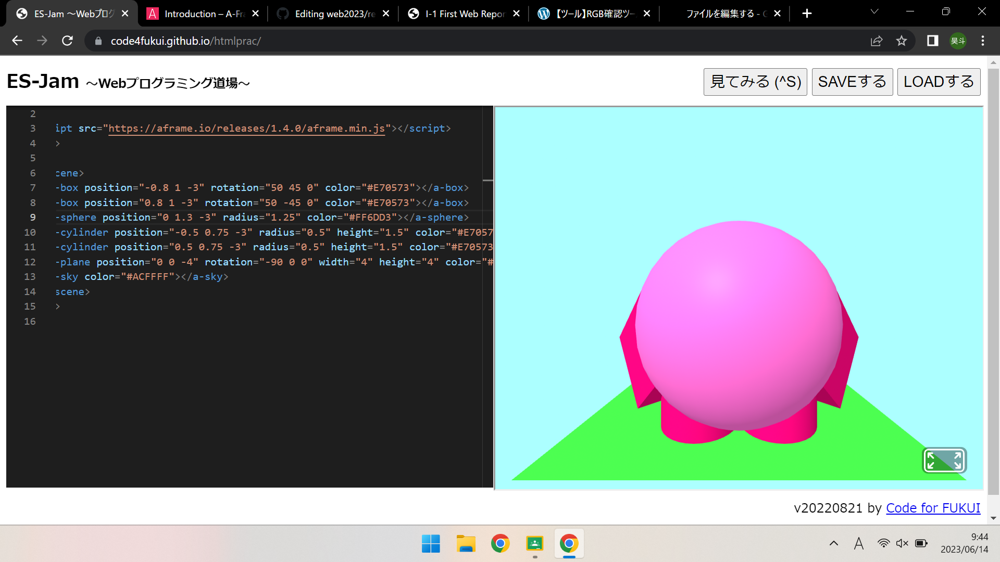
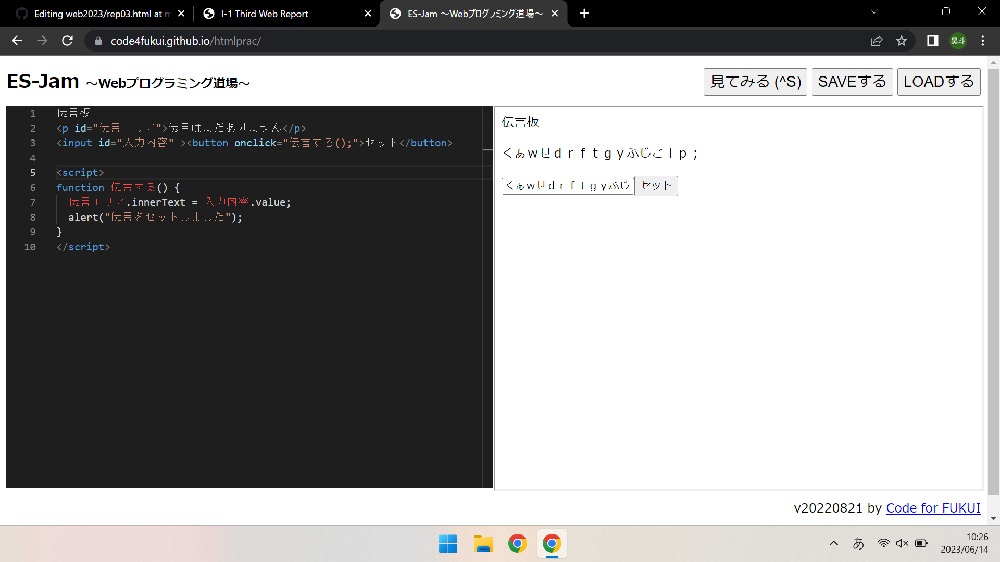

３週目のレポート ： 公大高専１年実習I-1
3a班09番 岡部 昊斗
第3週目
3-1 JavaScript体験：VR空間を作る

自作した３次元空間
1.内容
球体を1つ、立方体を2つ、円柱を2つを奥行や角度変更を駆使することでで某ゲームキャラクターの再現をした。空や地面、物体の色をRGB確認ツールを活用し、色を変更した。
2.感想
プログラミングで物体を立体的に操作し、どうすれば思ったような形になるのか思考するのが非常に楽しく感じた。
3-2 JavaScript体験：伝言プログラムを作る

伝言板
1.内容
ボックスの中に文字を入力し、「セット」を押し、OKを押すことで伝言板に文字を張り付けることができる。
2.感想
JavaScriptという新しい言語を使用し、入力すると表示するという新しい技術を学ぶことができ、さらにプログラムによって動作をできるようになりたいと思った。
3-3 JavaScriptプログラムの３次元空間の体験
1.内容
2.感想
かんそうかんそう
第2週目のレポート
2週目のレポート
第1週目のレポート
1週目のレポート